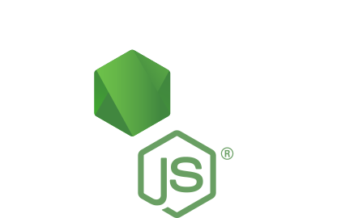
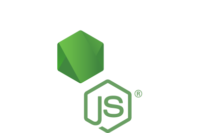

I'm a neuroscience major at the
University of Chicago, fascinated by the
potential application of technology to the field of medicine. I'm a self-taught
designer, software developer, and photographer, and I'm currently
an intern for Accenture, building demo web
applications for various Fortune 500 clients to demonstrate the
plausibility of incorporating agile metholodies and DevOps into
legacy systems.
Experience
Accenture
Jun. - Sep. 2017
Technology Summer Analyst
Used Angular2 and React to build the front-end of several client demo applications,
one of which helped close an $80 million deal. In addition, wrote functional tests
using Cucumber and Selenium, and unit tests using Jasmine. Lastly, built microservices
using Java Spring Cloud and Netflix OSS stack.
Inventory Connection
Jun. 2016 - Jun. 2017
Full Stack Developer
Designed and developed both the front-end and back-end for the company's flagship application,
using Sketch, HTML, CSS, jQuery, C#, and .NET.
ExplORer Surgical
May - Nov. 2016
Technical Operations Intern
Helped create tutorial videos for the flagship application, as well as helped with
various technical issues and ensuring HIPAA compliance.
Sewickley Academy
Aug. - Sep. 2015
Information Technology Intern
Assisted in computer/network set up and day-to-day technology maintenance.
Saieed H. Saieed M.D.
Sep. 2011 - Aug. 2015
Information Technology Intern
Set up an electronic medical records system, ensuring security via firewalls
and VPN tunnels. Also maintained any all computers and technology used in the office.
Volunteer Work
All for One
Sep. 2012 - Present
Co-Founder
Helped found an organization that raises money for orphaned children in Egypt.
Through bake sales and t-shirt sales, we have, to date, raised and sent approximately $9,000.
UPMC Children's
Jun. 2014 - Aug. 2015
Volunteer Researcher
Wrote script to process/analyze MRI data for use in various projects involving
the cognitive development of neonates
Sewickley Academy
Sep. 2011 - Feb. 2015
Mathcounts Coach
Tutored middle school students in math, helping them learn college level topics
to compete at the national Mathcounts Competition.
Awards
Rotary Award
March 2014
Rotary Award for Excellence in Service to Humanity
Award given by the Rotary Club to recognize non-Rotarians who
"have demonstrated exemplary humanitarian service consistent
with Rotary's ideals." Received after nearly 600 hours of community
service over the course of three years.


 
